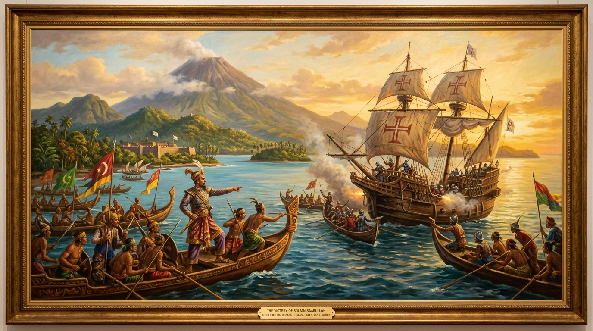

Abad 16 (1511 – 1575 M)PORTUGIS
Monopoli Rempah & Perang Benteng
Kedatangan Portugis di Malaka dan Maluku memicu perlawanan sengit kesultanan-kesultanan maritim untuk merebut kembali hegemoni niaga dan kedaulatan tanah air.
Ternate
Demak
Aceh